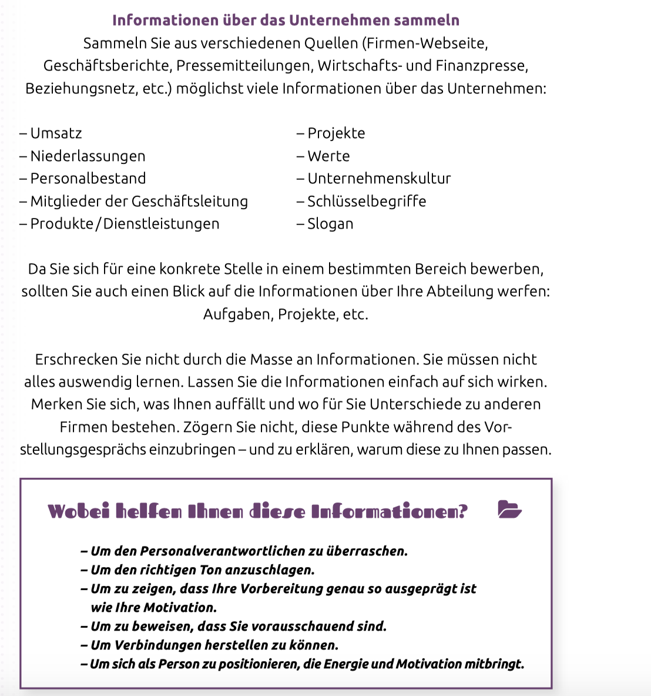

Bewerbungen
1
Bewerbungen
1.1
Meine Erfahrungen
1.2
Besser machen
1.3
Beispiels-Fragen an Gegenpartei
2
Hilfe bei der Jobsuche
2.1
Events
2.2
Kontaktmöglichkeiten via UZH
2.3
The Hidden Jobmarket
2.4
Jobmessen
2.4.1
Dresscode
2.4.2
Elevator Pitch: Wichtiges
2.4.3
Template nach Vernetzung
3
Cover-Letters
4
Bewerbungsgespräch
4.1
Wie kann ich ein Bewerbungsgespräch mit Erfolg überstehen?
4.2
Welche Interviewer stellen welche Fragen?
4.3
Typische Fragen, welche an einem Bewerbungsgespräch auftauchen:
4.4
Fragen in der Kategorie
Über Dich
4.5
Fragen in der Kategorie
Über Deine berufliche Ziele
4.6
Fragen in der Kategorie
Über Deine Ausbildung
4.7
Fragen in der Kategorie
Über Deine Berufserfahrung
4.8
Fragen in der Kategorie
Über Deine Praktikas / Ferienjobs
4.9
Übersicht möglicher Fragen
5
Workshops
5.1
Wieso gibt es überhaupt Workshops?
5.2
Vorbereitung
6
Konkrete Stellen
6.1
SBB: Career Starter Data Science
6.1.1
Bewerbungsfenster
6.1.2
Stellenbeschreibung
6.1.3
Aufgaben
6.1.4
Beschäftigungsgrad
6.1.5
Anforderung
7
Data Science
8
Webdevelopment
Published with bookdown
Bewerbungen
Chapter 5
Workshops
5.1
Wieso gibt es überhaupt Workshops?
Beispiel, wieso es Workshops gibt.
5.2
Vorbereitung

Beispiel, wie ich mich auf einen Workshop vorbereiten sollte